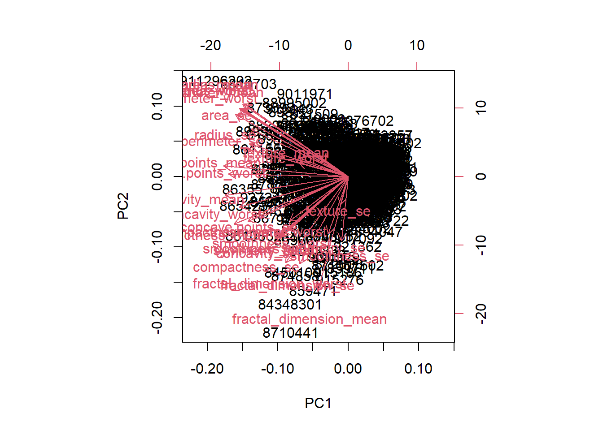
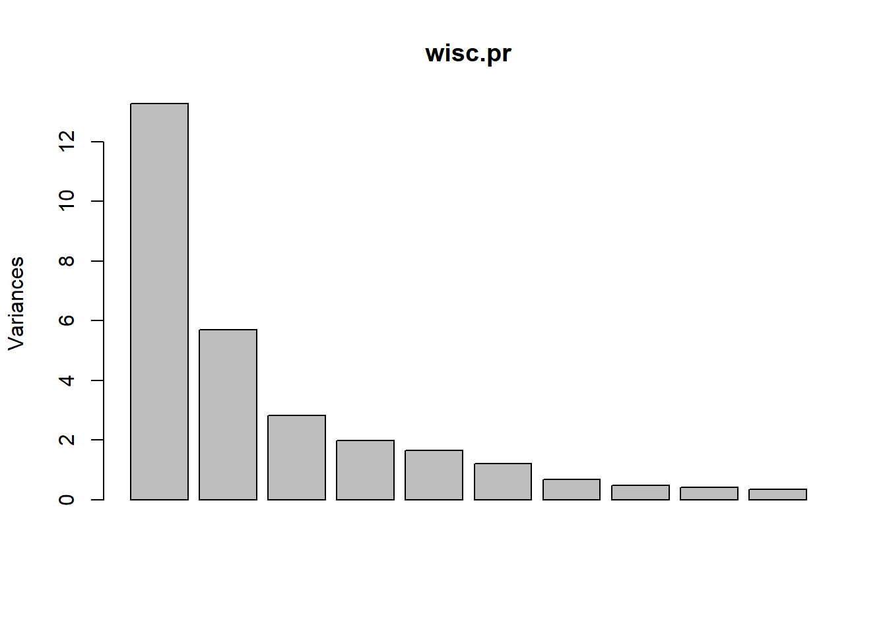

Let’s try PCA on this data to see what major features might be hidden in this high dimensional data that are hard to see any other way.
The function ‘prcomp()’ is useful, but you need to change the default ‘scale()’ from FALSE to TRUE so that R can change the scales and make it easier to compare the data as apples to apples
Do we need to “scale” this data before PCA? We look at the mean and sd of the variables (i.e. columns)
If the units of the data are already the same, you shouldn’t have to scale
Q4. From your results, what proportion of the original variance is captured by the first principal components (PC1)?
0.4427
Q5. How many principal components (PCs) are required to describe at least 70% of the original variance in the data?
3
Q6. How many principal components (PCs) are required to describe at least 90% of the original variance in the data?
7
biplot(wisc.pr)

Q7. What stands out to you about this plot? Is it easy or difficult to understand? Why?
It has all the dimensions, but is too messy to read because there are too many labels.
plot(wisc.pr)

One of our main results from methods like PCA is a so called “score plots” a.k.a. “PC plots”, “ordination plots”, “PC1 vs PC2”, etc. Let’s make one ourselves…
The two plots look very similar. Both the PC1vPC2 and PC1vPC3 have somewhat clear clusters, but there is more overlap between the clusters in the PC1vPC3 plot.
Q9. For the first principal component, what is the component of the loading vector (i.e. wisc.pr$rotation[,1]) for the feature concave.points_mean? This tells us how much this original feature contributes to the first PC.
I think this is the point where most of the variance has been captured. I think it’s also called the ‘elbow’ or ‘scree’.
The colors in the plot above are reversed from the original colors we had for malignant and benign. Let’s flip the colors
Color diagnosis instead of grps
plot(wisc.pr$x[,1:2], col=diagnosis)
Q13. How well does the newly created model with four clusters separate out the two diagnoses?
table(diagnosis,grps)
grps
diagnosis 1 2
B 24 333
M 179 33
The model does a pretty good job of making two groups where most of group 1 aligns with a malignant diagnosis and most of group 2 aligns with a benign diagnosis.